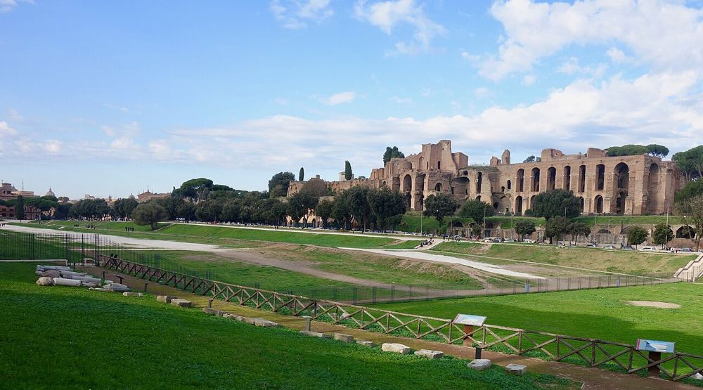
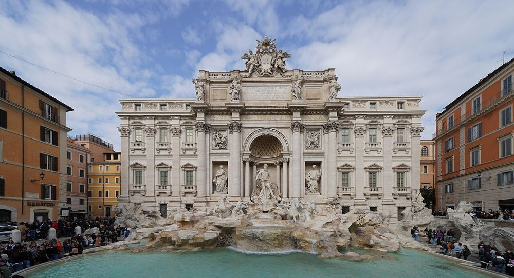
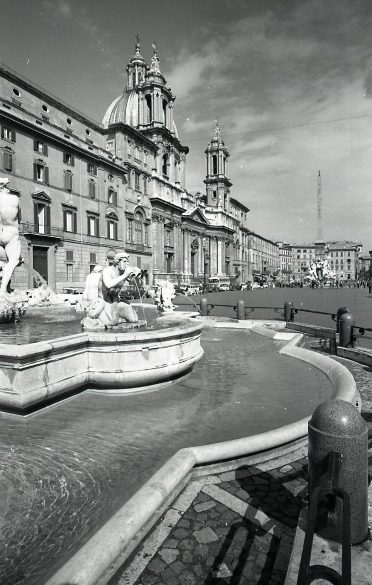
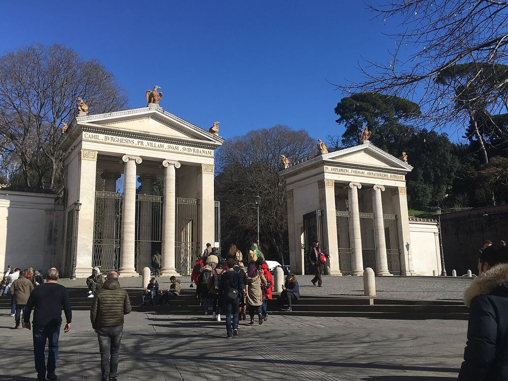
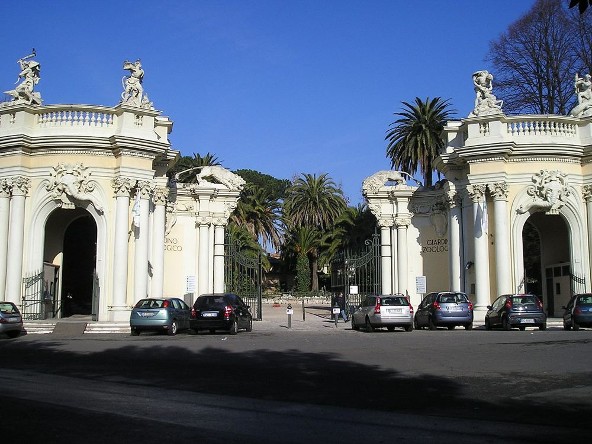
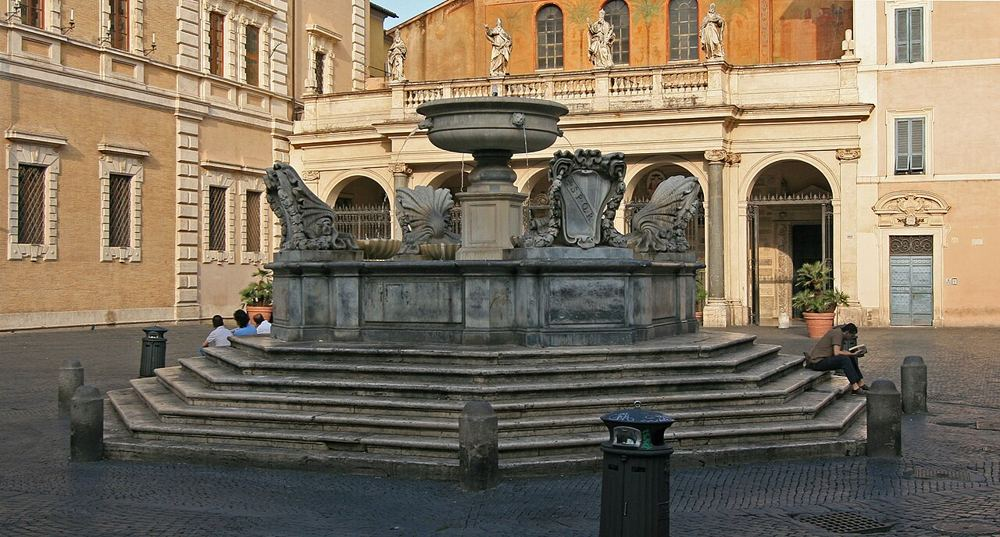

Cirque Maxime
Plein airGratuitPoussette OK
Une immense pelouse là où se tenaient les courses de chars. Les enfants peuvent y courir librement.
Via del Circo Massimo, 00186 Roma
Métro Circo Massimo (ligne B)
- Toilettes à 160 m
Les lieux qui conviennent dès la naissance, où changer bébé, et des journées qui laissent la place à la sieste.


Avec un bébé, on visite surtout le matin et en fin d'après-midi. Le carnet PetitMondo prévoit automatiquement un temps calme après le déjeuner pour les moins de 4 ans.

Une immense pelouse là où se tenaient les courses de chars. Les enfants peuvent y courir librement.
Via del Circo Massimo, 00186 Roma
Métro Circo Massimo (ligne B)

Depuis février 2026, l'accès au bord du bassin est payant (2 €) et se réserve. La fontaine reste visible gratuitement depuis la place. Très bondée : venez tôt le matin ou tard le soir.
Piazza di Trevi, 00187 Roma
Métro Barberini (ligne A), puis 10 min à pied

Une grande place piétonne avec trois fontaines et des artistes de rue. Un marché de Noël s'y installe en décembre.
Piazza Navona, 00186 Roma
Bus jusqu'au Corso del Rinascimento

Le grand parc des familles romaines : allées ombragées, petit lac avec barques et location de vélos ou de rosalies. Accès direct depuis la place du Peuple par la terrasse du Pincio.
Piazzale Napoleone I, 00197 Roma
Métro Flaminio ou Spagna (ligne A)

Le zoo de Rome, dans la Villa Borghese. Ombragé et praticable en poussette, il coupe agréablement une journée de monuments.
Piazzale del Giardino Zoologico, 1, 00197 Roma
Tram 3 ou 19, arrêt Bioparco

Un musée à toucher pour les 0-11 ans, avec un espace réservé aux 0-3 ans. Séances sur réservation en ligne. Parfait plan B en cas de pluie.
Via Flaminia, 80, 00196 Roma
Métro Flaminio (ligne A), puis 5 min à pied

Ruelles colorées, places animées et trattorias : le quartier idéal pour un dîner en famille. Pavés partout.
Piazza di Santa Maria in Trastevere, 00153 Roma
Tram 8, arrêt Belli
Tables à langer signalées dans OpenStreetMap autour de chaque lieu. Le recensement est encore partiel : gardez un tapis à langer nomade dans le sac.
Touchez un point pour lancer l'itinéraire.
Chargement des données OpenStreetMap…
5 lieux couverts pour sauver la journée.
Voir8 sorties gratuites ou en partie gratuites.
VoirForum romain et Palatin, Musées du Vatican et chapelle Sixtine et d'autres idées pour les grands.
VoirCe qui roule, ce qui coince, et les alternatives.
VoirFiches vérifiées le 29 octobre 2026. Services issus d'OpenStreetMap, non vérifiés sur place. Horaires, tarifs et conditions d'accès changent souvent : vérifiez toujours sur le site officiel avant de partir.